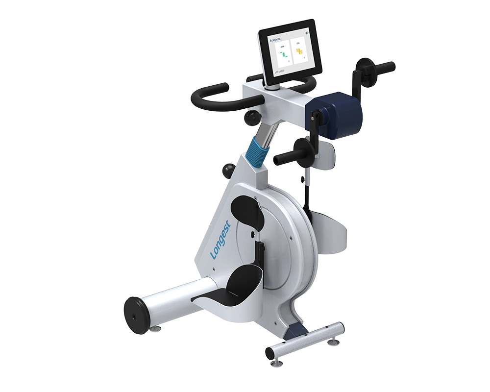
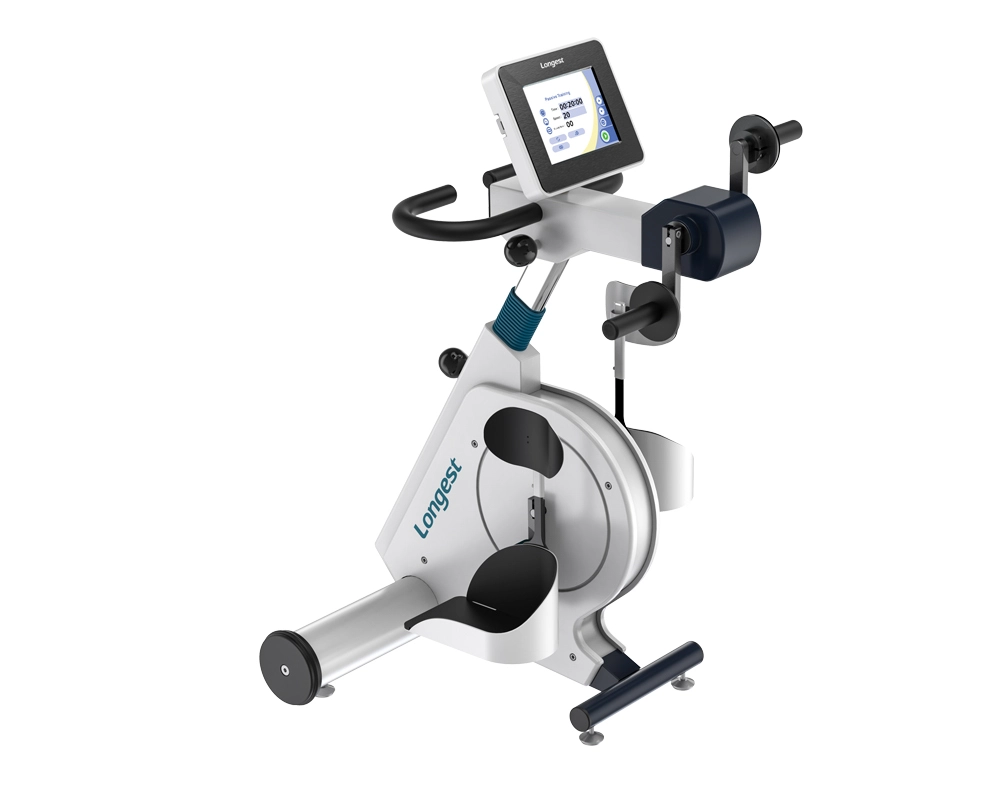
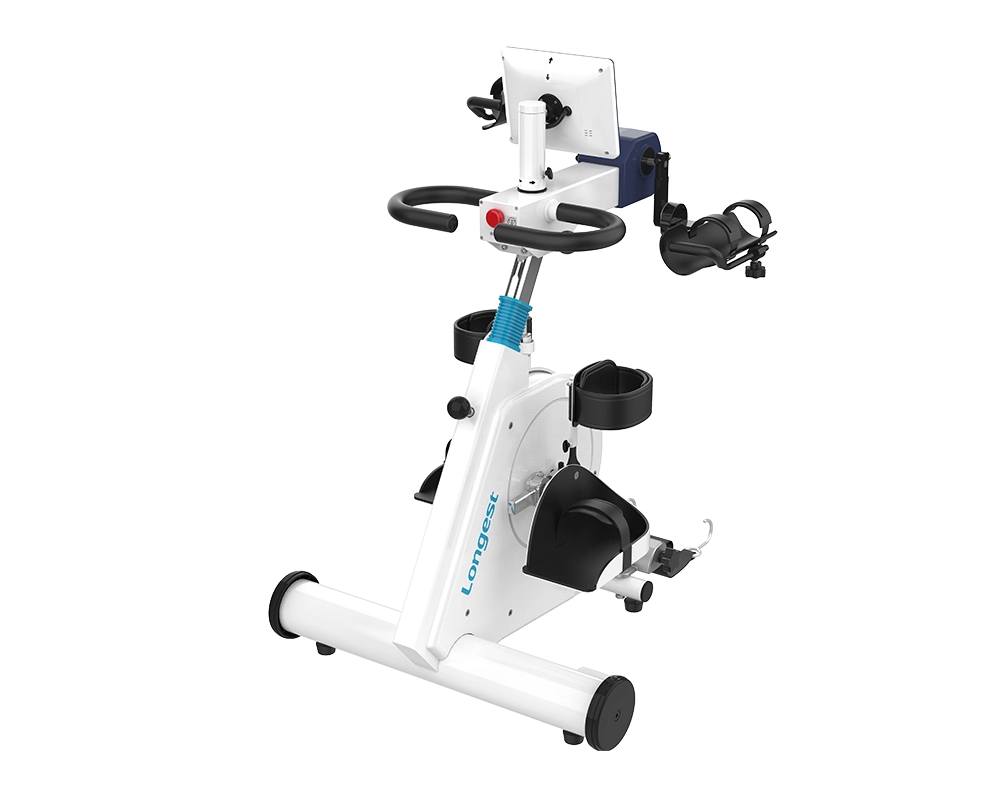
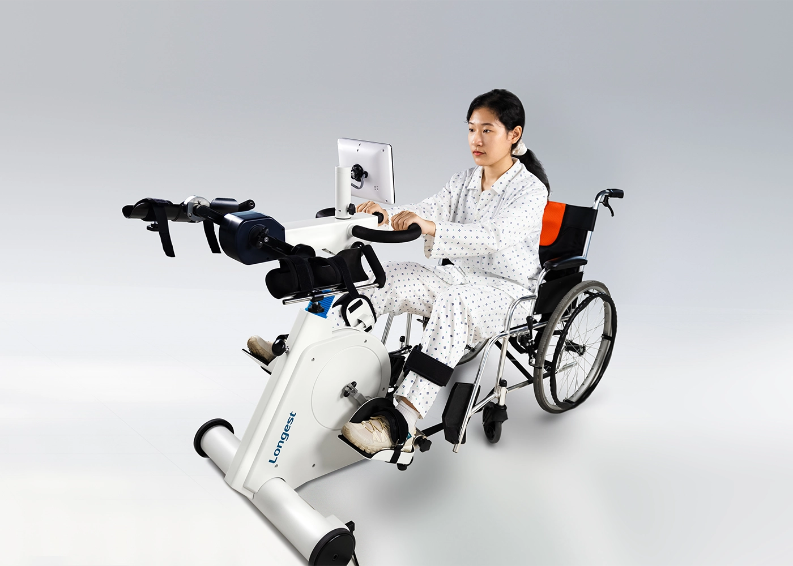
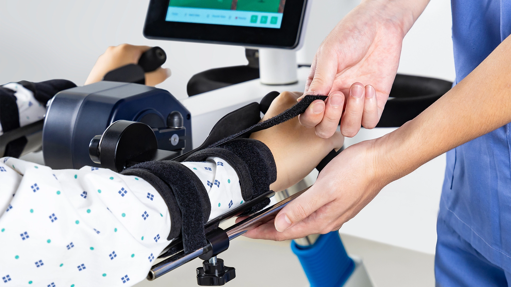
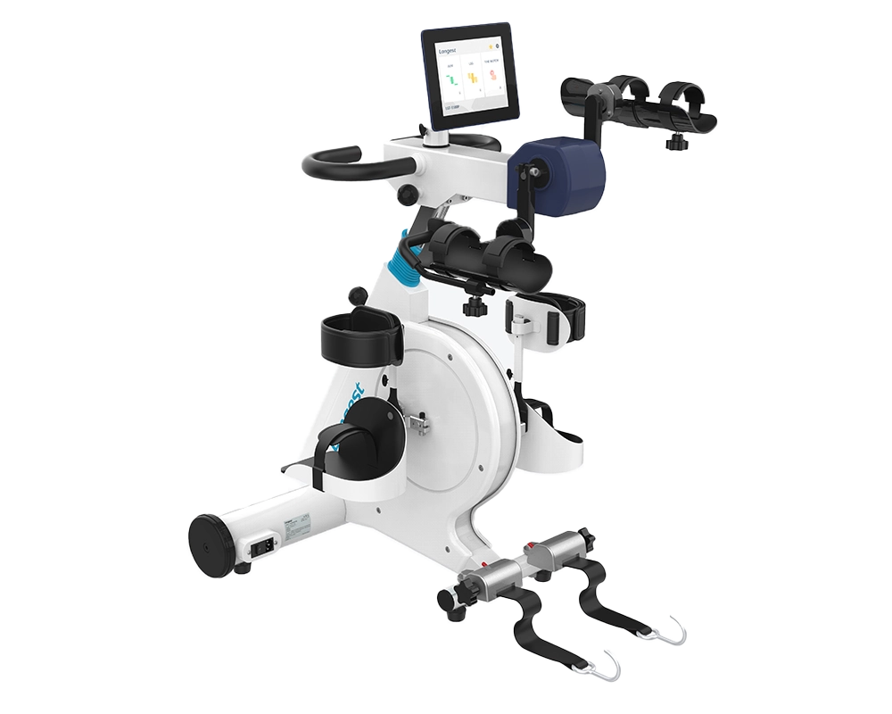

מכשירי אימון פעיל-פסיבי (APT) לשיקום ופיזיותרפיה
Longest Medical, יצרנית מכשירים רפואיים מובילה, מציגה מכשירי קינסיותרפיה — מאמנים אקטיביים-פסיביים (APT), המיועדים לשפר שיקום ופיזיותרפיה.
שלושה דגמים של מאמנים אקטיביים-פסיביים RehaMoto

מכשיר אימון שיקומי המיועד לאפשר תנועות אקטיביות ופסיביות של הגפיים העליונות והתחתונות. המכשיר כולל ארבעה מצבי אימון: אימון אקטיבי-פסיבי, אימון מסייע, אימון סימטריה ואימון איזוקינטי. בנוסף, מצויד במספר פונקציות הגנה, לרבות בקרת עוויתות, עצירת חירום, בקרת מהירות מרבית והגדרת מהירות.
למידע נוסף באתר היצרן
RehaMoto שולט במנוע הסרבו באמצעות יחידת העיבוד המרכזית ומערכת ניטור ביו-מכני. המשתמש יכול לבצע אימון פסיבי, מסייע, אקטיבי ובמהירות קבועה עם RehaMoto LGT-5100D Config I. מערכת הזיהוי החכמה מאפשרת ניטור בזמן אמת של מצב האימון ומעבר חלק בין מצבים שונים, להשגת אפקט האימון הקליני הטוב ביותר.
למידע נוסף באתר היצרן
מכשיר יוצא מן הכלל המציע הזדמנויות אימון בטוחות, מעניינות ויעילות לאנשים שניידותם מוגבלת עקב מצבים נוירולוגיים, פציעות, ניתוחים או הפרעות שריר-שלד. כמאמן אקטיבי-פסיבי לגפיים העליונות והתחתונות, כולל חמישה מצבי אימון ומנגנוני הגנה מרובים. מסך אנדרוד מאפשר גישה למגוון רחב של יישומים.
למידע נוסף באתר היצרןקינסיותרפיה, המכונה גם תרגול טיפולי או תרפיית תרגול, משתמשת בתרגול ובתנועה כאמצעי טיפולי לשיפור תפקוד פיזי, הפחתת כאב וקידום רווחה כללית. היא מדגישה תכנון ויישום של תוכניות תרגול מותאמות אישית לטיפול בליקויים תפקודיים ספציפיים ולשיפור איכות החיים של אנשים עם בעיות בריאות שונות.
מאמנים אקטיביים-פסיביים (APT), המכונים גם אופני שיקום, מהונדסים להציע תרגול קרדיווסקולרי בעל השפעה נמוכה. הם מסייעים לאנשים בהתאוששות מפציעות, ניתוחים או מצבים רפואיים כמו שבץ. נפוצים בשימוש בבתי חולים, מרפאות אמבולטוריות, מרכזי שיקום ומתקני רפואת ספורט.

שישה תחומי יישום מרכזיים לשיקום וטיפול
מסייע למטופלים לאחר ניתוחים אורתופדיים להשיב כוח, ניידות ולמנוע ניוון שרירים.
מועיל לשבץ, טרשת נפוצה ועוד — מסייע באימון מחדש של תפקוד מוטורי וקידום התאוששות.
מפחית כאב במצבים כמו דלקת פרקים על ידי חיזוק שרירי התמיכה והגדלת טווח תנועה מפרקי.
משפר את תפקוד הלב והסיבולת אצל חולי לב במהלך תהליך ההתאוששות.
מסייע לספורטאים לשחזר כוח וגמישות לאחר פציעה ולמנוע פציעות עתידיות.
משמר מסת שריר, שיווי משקל וניידות אצל קשישים, ומפחית את הסיכון לנפילות.

אופני המאמן האקטיבי-פסיבי מתוכננים לספק למשתמשים חווית אימון מגוונת ויעילה, המשלבת מצבי תרגול אקטיביים ופסיביים. מכשיר חדשני זה מאפשר תוכניות שיקום וכושר מותאמות אישית, לשיפור כוח שרירים, גמישות וזרימת דם. בין אם אתם מתאוששים מפציעה או מעוניינים לשפר את הכושר, המאמן האקטיבי-פסיבי מציע פתרון מקיף לכל רמות הכושר.
גלריית תכונות מפורטת של הדגם המתקדם

רצועת הגפה מעוצבת לספק קיבוע אמין למטופלים שכוח השריר שלהם חלש.
צפו בסרטונים ולמדו על המכשירים והשימוש בהם
סרטון הדגמה: התקנה, תחזוקה ושימוש במכשיר RehaMoto LGT-5100D.
הכירו את המאמן האקטיבי-פסיבי RehaMoto LGT-5100P לשיקום הגפיים העליונות והתחתונות.
כיצד להשתמש ב-RehaMoto LGT-5100D לאימון גפיים עליונות וחיזוק שרירים חלשים ומשותקים.
מכשירי RehaMoto מצוידים במנגנוני הגנה מרובים: בקרת עוויתות, עצירת חירום בלחיצה אחת, בקרת מהירות מרבית, רצועות קיבוע אמינות, מונע התהפכות למשתמשי כיסא גלגלים ועוד — הכל להבטחת אימון בטוח ויעיל.